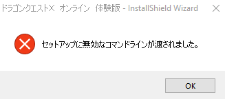
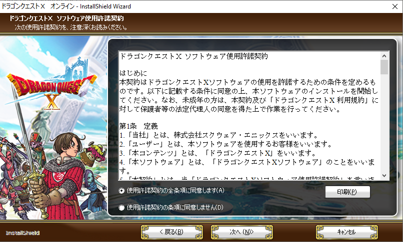
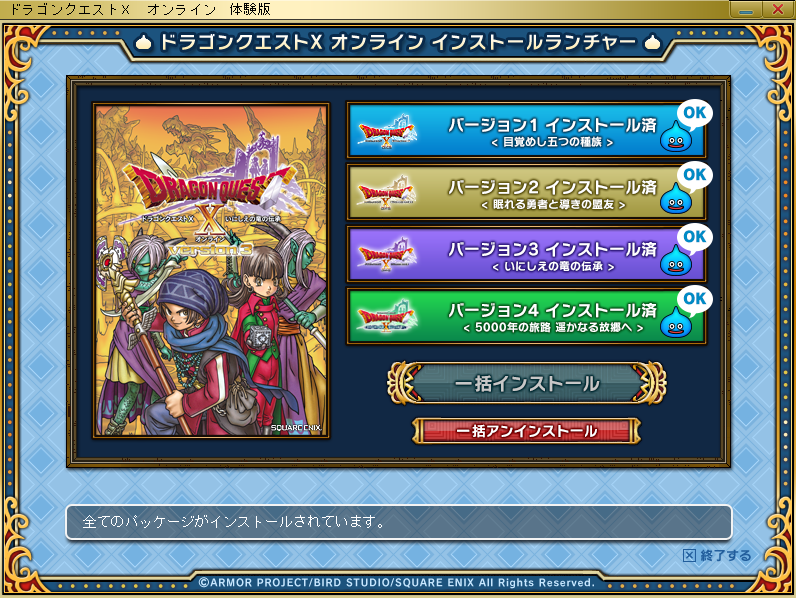
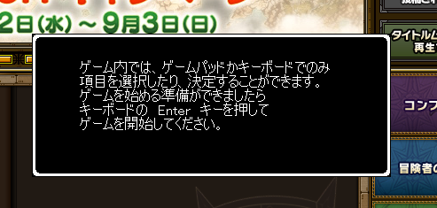
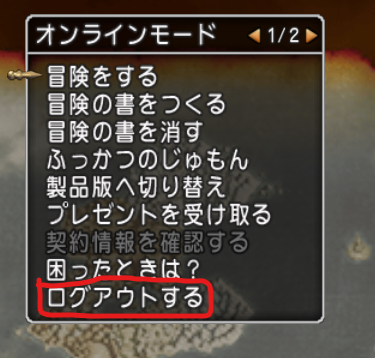

These pages are designed to take you step-by-step through the process of getting the game set up from scratch. Each page will list steps in order you should complete them in, including an optional VPN setup guide if you live outside of the United States or Japan. As of right now, this guide only covers the PC version of the game. This will be updated later with information pertaining to other versions of the game as well, however steps remain largely the same regardless of which version you play on.
Information is subject to change as the game and the sites become updated. Huge thanks to renaudabaj on GitHub for his original guide, where a lot of this information is sourced from.
Step 1. Setting Up a (Japanese) Square-Enix Account
Making a Japanese Square Enix will be the first thing you have to do as a new user regardless of which version of the game or platform you decide to play. Please make sure to follow the steps carefully to ensure you successfully create a Japanese Square Enix Account.
However, if you already have a Japanese Square Enix account, you may skip to the next step.
To start, navigate to the Japanese Square Enix Login Page.

You'll want to click on the big blue register button near the bottom of the page here, it'll bring you to the account registration page.
On this page you'll have to select "Japan" under the "Country" setting and wait for the page to reload.

Enter your information according to the image above. If you already have a non-Japanese Square Enix account, note that this account must be unique, meaning it must use a different email and User ID.
Once you complete filling out the information, complete the captcha and hit the orange button below.
You'll be redirected to the following page shown below, where you'll be asked to enter a verification code sent to the email you used to create the account.

Once you've entered the verification code, click the orange button to proceed.

Click the orange button once again and your account setup will be complete.
Step 2. Activating the Windows Free Trial
Please make sure to follow the next steps carefully. A lot of new users get tripped up activating their trial.
First, click this link. It'll bring you to the page below. Scroll down until you see the indicated buton.

It will bring you to the following page. Click the large blue button on top.

You'll be prompted to log in, do so, and hit the orange button on the following two pages shown below. This will register the game on your account, so you'll be able to play the trial after installing the client.


Step 3. Downloading and Installing the Client
To download and install the client, head to the free trial download page here. Scroll down and click this button.

This will begin downloading the installer for the client. If your browser marks the file as dangerous or your firewall blocks the download, disregard these warnings. After the download has completed, unzip the DQXInstaller_ft.zip file. Open the unzipped folder, open the "DQX_Trial_Installer" folder, and finally open the "DQXInstaller_ft.exe" file. You will see the following application appear. Click the light blue Install button to begin the installation process.

If you receive the following error message below when trying to launch the setup executable, make sure to launch it from somewhere on your main drive where Windows is installed.

After a few seconds, this window will appear. Click "(N) >" to continue.

Accept the agreement by checking the top choice and then clicking the "(N) >" button.

This screen will allow you to change your install directory. Do so now if you're inclined, as this will be your last chance without moving crucial game files (unstable). After selecting an install directory, continue to proceed through this installer.

At this point you'll be asked if you would like to create a desktop shortcut. Checking this box will create one for you. Afterwards, continue by hitting the middle 完了 button. This will finish the initial Version 1 install.

The install will now continue to install Versions 2 to 4 in the background. This may take a few minutes, but do not close the installer window just yet. You'll know it is finished when all 4 versions say "OK" next to them. Once it does, you can close out of this installer.

Congratulations, you've now installed the Dragon Quest X client, however, the game itself is yet to be installed in the next step. The installer you just ran contains necessary files for the launcher client to run, however game files will be pulled from the server after you launch this client.
Step 4. Initializing Client and Config
There are still a couple more crucial steps before you're able to play the game. You will not be able to play the game correctly without following these steps, as your account will have to be registered to the client itself. This portion of the guide will also go over the config client.
The first time you launch the client you'll be prompted with the following screen to wait while the game downloads and patches.

Depending on your connection, this could take about an hour to download. Once the download finishes, a jingle will play. Close the launcher for now.
BEFORE GOING ANY FURTHER, IT'S RECOMMENDED TO DOWNLOAD AND REPLACE THE LAUNCHER AND CONFIG EXECUTABLES WITH THEIR ENGLISH TRANSLATED VERSIONS.
Instructions for the English translated launcher can be found here. While not wholly necessary, it's a good idea to have for easier understanding.
Instructions for the English translated configuration can be found here. This is important to have, as you will want to have this to change various game settings.
Be sure to carefully read the instructions for both. Also, Please note that whenever the game updates, it will overwrite both of these files with their original Japanese versions, so you will need to re-download them when this happens.
This is as far as non-US players will be able to go without setting up an appropriate VPN service. Please skip to that part of the guide now if you're not playing from the US or Japan.
Next, open up the launcher once again. There should be a DQX shortcut icon on your desktop. If it it isn't there, navigate to your DQX install location and open DQXBoot.exe in the Boot folder. It's a good idea to make a shortcut to this file if you don't have one.

This is the main screen of the client. You might be tempted to log in immediately to start playing. Don't.
The first thing you're going to want to do is click on the button indicated in the image below:

Which will bring you to the following screen:

Ignore Step 1. This is registration, which by this point you should have already done. Instead, if you're ready to play (without looking at the config portion of this guide), go ahead and enter your Japanese Square Enix Account credentials and then click the green button at the bottom. This will register your account to the client. You will see the message below appear. Simply press "Enter" and the game will launch.

From now on, when opening the launcher, make sure to select your account as shown circled to the left when logging in.

If you've done everything correctly up to this point, the game should automatically start and you will see a black box with yellow text (this will be in Japanese, don't worry). Keep pressing Enter a few times to scroll through the screens and you'll see a screen with this window to the left (still in Japanese).

Select the option that is circled in red (Logout). You will be prompted two times, just select the top choice twice, and the game will close with the launcher opening itself again. The game needs to be closed to download the files needed for English translation, so now head over to the dqxclarity page for instructions on how to translate the game into English using the dqxclarity program.
If you'd like to configure game settings, click the purple Dracky icon on the right side of the launcher window. More information about the config and its settings can be found from our friends over at Ethene Wiki: Configuring Dragon Quest X Settings
Step 5. VPN Setup Guide (Non US only)
(This is under construction, in the meantime:)
VPNs: You only need a VPN if you do not live in Japan or the USA. While there are free options listed below, many people recommend Mudfish as you can pay for data to use rather than a monthly fee. DQX uses very little data during play, so a small charge of $5 for data will last months, if not years of playtime. The free options are generally not recommended as they suffer in convenience or quality.
PAID: Mudfish: https://mudfish.net
FREE: ProtonVPN: https://protonvpn.com
FREE: SoftEther VPN: https://www.softether.org/
VPN Gate (needed if using SoftEther above): https://www.vpngate.net/en/download.aspx